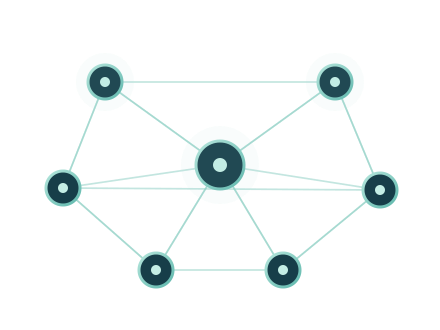

Mutual creation
People create for people. Their activities are aimed at meeting each other's needs and improving the life of society as a whole.
A vision of a society based on mutual creation
We envision a society where people freely use their knowledge and abilities to meet each other’s needs. People jointly create essential goods, share the results of their collective labor, and independently decide how to organize their lives. Without money and without the concentration of power in the hands of a few.
A society where personal interest does not contradict the common good, but helps create it. Where resources are used wisely, and a person is a participant in creating a better future rather than a means for others to make a profit.
How could such a society be organized?
This project is open to everyone who wants to explore this idea together, discuss its foundations, and find ways to bring it to life.

01 · A different vision
Today, life in society largely depends on money, competition, and the pursuit of wealth accumulation. This determines how people work, who receives the results of their labor, and what exactly gets produced.
Yet, must society necessarily be structured this way?
The Society of Mutual Creation offers a different perspective on this question. People produce goods, provide services, advance knowledge, and create technologies that others need. The results of their labor make it possible to satisfy shared needs and create conditions for everyone’s well-being.
A person’s contribution should benefit both society and themselves. Participating in the common cause should give a person the opportunity to receive additional goods. Personal interests and the interests of society do not have to conflict with one another. On the contrary, they can be united.
Basic goods must be accessible to everyone. Access to additional goods may depend on a person's contribution to the common cause. To achieve this, clear and fair rules must be established.
We should not build a new society modeled on the current one. We need to step away from familiar concepts and try to build it from scratch, without carrying over the flaws of the existing system.
At the same time, there is no need to try to change human nature or suppress the desire for personal achievement. It is important to create conditions where competition, initiative, and personal interest are directed toward creation, rather than gaining power over other people.
02 · Core principles
The proposed society rests on several interconnected principles.
People create for people. Their activities are aimed at meeting each other's needs and improving the life of society as a whole.
Every person participates by their own free will. Cooperation is built on mutual interest, free choice, and the opportunity to contribute in various ways.
Basic goods must be accessible to everyone. When distributing additional goods, a person's contribution to the common cause can be taken into account. Rules must be clear and transparent so that no one can exploit them to gain advantages at the expense of others.
Every result of human labor involves the expenditure of energy and resources. To account for them, electrical energy is proposed as a common baseline. This is not money and not a new currency. Such accounting is needed to understand how much energy and resources are spent on production, what we get as a result, and how wisely we use available capabilities. Energy must not become a measure of a person's worth or their contribution to society.
People and autonomous communities organize their own activities and jointly resolve emerging issues. At the same time, no single center of power should arise, nor any opportunity to concentrate governance in the hands of specific individuals or groups.
Production must meet the real needs of people. Resources should not be wasted on overproduction or creating goods that nobody needs while other people lack access to the most basic necessities. We must treat nature with care and consider what kind of living conditions we will leave for future generations.
Modern technologies, including artificial intelligence, can greatly simplify solving many tasks. They can be used to forecast needs, account for resources and energy, analyze production, process participants' proposals, and verify how well decisions align with the Society's Postulates. Artificial intelligence can analyze information, make forecasts, and suggest solutions. However, it must not govern society or make decisions in place of people. Its conclusions must be verified by humans and adjusted when necessary. Decisions and the responsibility for them remain with people and their communities. Technology must serve humans, not humans serve technology.
03 · Working together
Principles alone are not enough. We need to find ways that will allow us to bring them to life.
We have a number of questions to explore:
Answers to these questions are still to be found. This requires open discussion, a critical perspective, practical solutions, and the participation of people with diverse knowledge and experience.
04 · Open project
The Society of Mutual Creation is an evolving concept, open to discussion, criticism, and further development.
The Postulates describe the foundations of the proposed society. They must be interconnected and complement one another. This is not a ready-made manual for building a new society, but a foundation upon which its rules and operating methods still need to be developed.
Together, we have to work through many issues, identify potential contradictions, examine risks, and propose solutions that do not conflict with the core principles.
No proposal becomes part of the Postulates automatically simply because someone suggested or supported it. All substantive changes must be reviewed, discussed, and justified.
05 · Participation
You do not have to agree with every idea to participate. Questions, criticism, alternative viewpoints, and well-reasoned objections are just as important as support.
You can:
Every substantive proposal deserves attention. What matters is not just collecting ideas, but working through them together to find solutions that can be applied in practice. The project is open to everyone who is ready to think, ask questions, share experiences, and participate in creating something new.
06 · Let’s develop this idea together
A new society cannot be built with words alone. Ideas must be discussed, solutions sought, and tested in practice. Read the Postulates, join the discussion, and help figure out what a society of mutual creation can be.